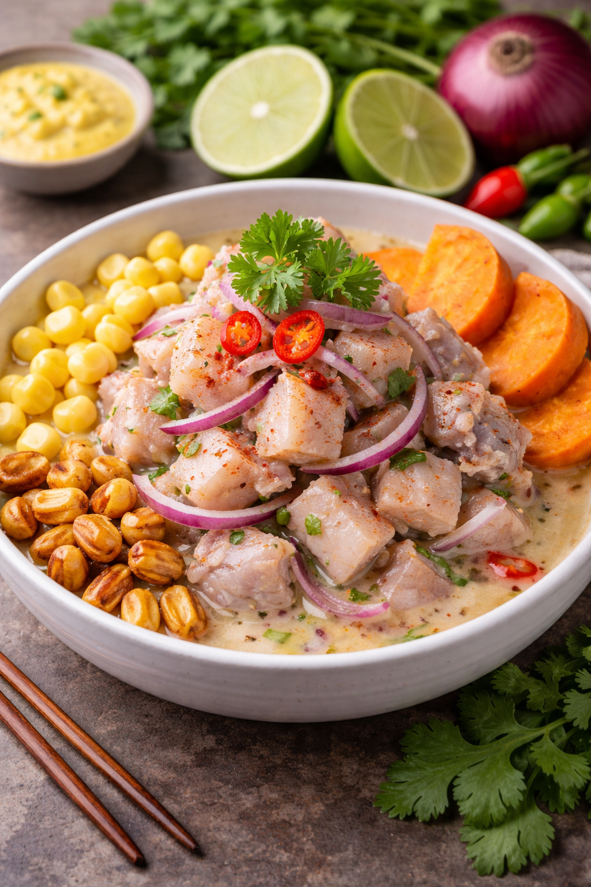
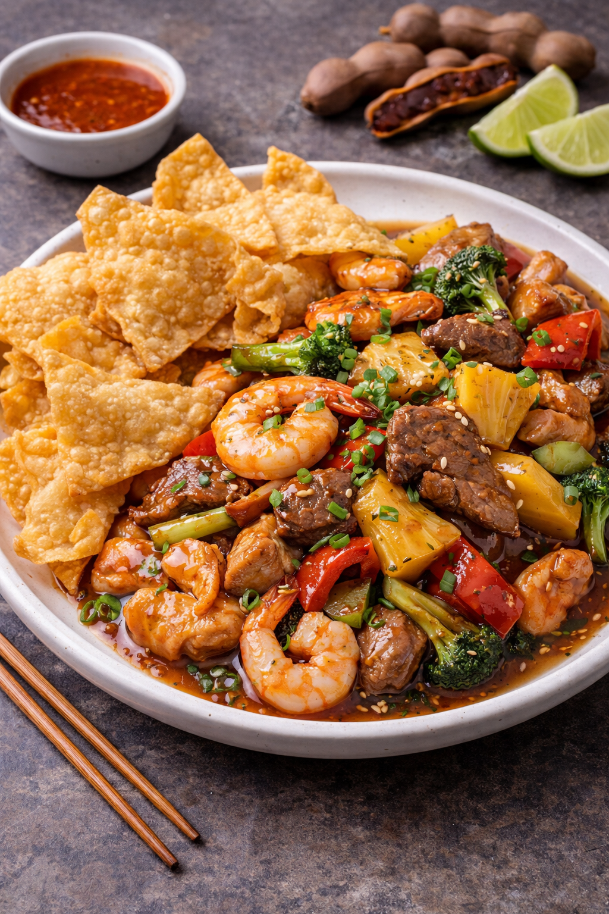

Experiencia

Ceviche Xiu Mei
Andino
Trozos de trucha fresca con carácter picante y matices orientales, coronados con choclo desgranado y el toque dulce del camote glaseado.

Xiu Mei (Bocaditos al vapor)
Oriental
Delicadas masas al vapor, celosamente rellenas con una mezcla noble de cerdo, pollo, hongos selectos y verduras chinas crujientes.

Kanlu Wantan
Infaltables
Magistral salteado de nuestras mejores carnes y langostinos con vegetales y frutas frescas, envueltos en salsa de tamarindo y acompañados de crujientes wantanes.